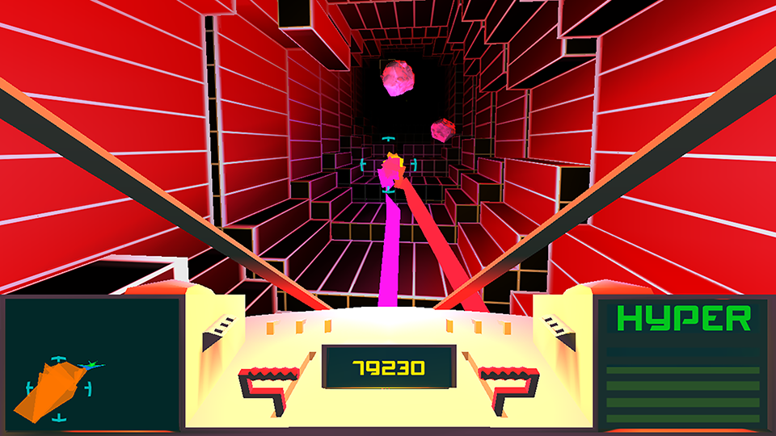

<!--
@license
Copyright (c) 2015 The Polymer Project Authors. All rights reserved.
This code may only be used under the BSD style license found at http://polymer.github.io/LICENSE.txt
The complete set of authors may be found at http://polymer.github.io/AUTHORS.txt
The complete set of contributors may be found at http://polymer.github.io/CONTRIBUTORS.txt
Code distributed by Google as part of the polymer project is also
subject to an additional IP rights grant found at http://polymer.github.io/PATENTS.txt
-->
<link rel="import" href="../../bower_components/polymer/polymer.html">

<dom-module id="super-games">
  <template>
    <style>
      :host {
        display: block;
      }


    </style>

    <super-section-title linktext="more supercore games @ itch.io">
      <!-- <span class="link-text">more supercore games @ itch.io</span> -->
    </super-section-title>
    <div class="owl-carousel layout horizontal wrap center-center">
      </img>
      <video class="featured-game" id="video" autoplay="autoplay" muted="muted" preload="auto" loop="loop" poster="//i.imgur.com/Is5Y5zrh.jpg">
        <source src="//i.imgur.com/Is5Y5zr.webm" type="video/webm">
        <source src="//i.imgur.com/Is5Y5zr.mp4" type="video/mp4">
        <object type="application/x-shockwave-flash" data="//s.imgur.com/include/flash/gifplayer.swf?imgur_video=http://i.imgur.com/Is5Y5zr.mp4&amp;imgur_width=854&amp;imgur_height=480&amp;imgur_url=http://imgur.com/Is5Y5zr" height="480" width="854">
          <param name="movie" value="//s.imgur.com/include/flash/gifplayer.swf?imgur_video=http://i.imgur.com/Is5Y5zr.mp4&amp;imgur_width=854&amp;imgur_height=480&amp;imgur_url=http://imgur.com/Is5Y5zr">
          <param name="allowscriptaccess" value="never">
          <param name="flashvars" value="height=480&amp;width=854">
          <param name="width" value="480">
          <param name="height" value="854">
          <param name="version" value="0">
          <param name="scale" value="scale">
          <param name="salign" value="tl">
          <param name="wmode" value="opaque">
        </object>
      </video>
      </img>
    </div>
  </template>

  <script>
    (function() {
      'use strict';

      Polymer({
        is: 'super-games',
        properties: {},
        ready: function() {}
      });
    })();
  </script>

</dom-module>
